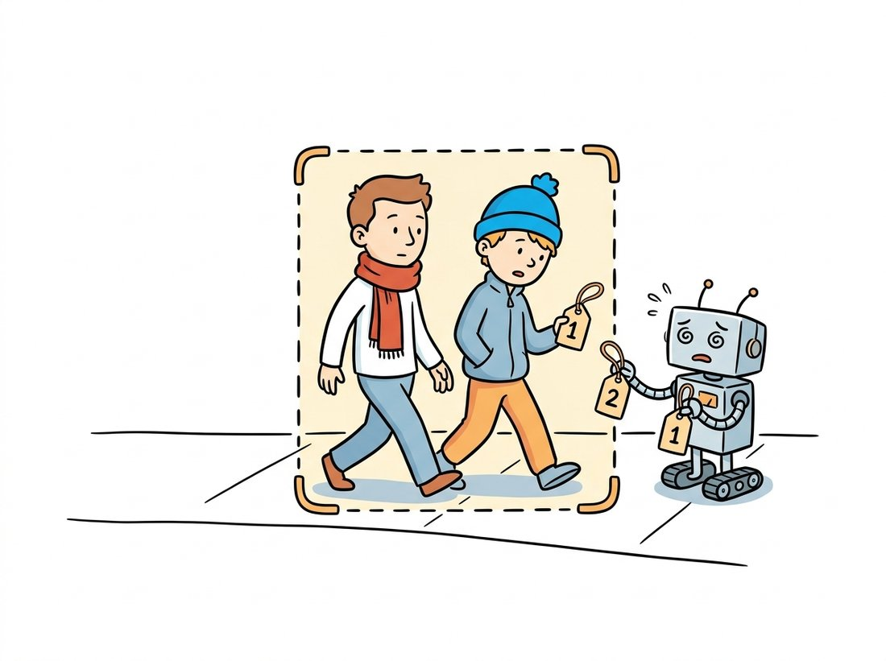

"A detector tells me there are three people in this frame. It told me the same thing last frame. My entire job, my whole reason for being, is to insist that they are the same three people. The detector could not care less. The detector has no object permanence. I am the object permanence."
A Tracker Holding On to Identities Through the Crowd
Multi-object tracking turns a per-frame detector into a per-object timeline by answering one question every frame: which of this frame's detections is the same object as which of last frame's tracks? The dominant paradigm, tracking-by-detection, runs a detector from Chapter 23 on each frame and then solves an assignment problem to link detections across time. SORT does this with a Kalman filter to predict where each track should be and the Hungarian algorithm to match predictions to detections, the learned-free descendant of the classical trackers of Chapter 15. DeepSORT adds a learned appearance embedding so identities survive occlusion, and ByteTrack recovers dimmed objects by matching low-confidence boxes in a second pass. This section builds the assignment loop and shows where learned features earn their place.
This final section composes the chapter's pieces into a complete video application. We have a detector (from Chapter 23), we understand motion (from optical flow and the classical Kalman filter), and we have learned appearance features (from every backbone in Part III). Multi-object tracking, or MOT, is the task of binding these together so that each object in a video carries a stable identity across frames. The problem is fundamentally one of data association under uncertainty, and its structure, predict then match then update, mirrors the recursive state estimation you saw with the Kalman filter in Chapter 15.
1. Tracking-by-Detection and the Assignment Problem Beginner
The tracking-by-detection loop is simple to state. Maintain a set of active tracks, each an object you are following with a predicted current position. For each new frame, run the detector to get a set of detections. Compute a cost for matching every track to every detection (how far apart, how dissimilar), solve for the assignment that minimizes total cost, update matched tracks with their detections, start new tracks for unmatched detections, and retire tracks that have gone unmatched for too long. The matching step is a classic linear assignment problem: given an $n \times m$ cost matrix, find the one-to-one assignment of tracks to detections with minimum total cost, solved exactly in polynomial time by the Hungarian algorithm.
The cost matrix is where every tracker's design lives. The simplest cost is spatial: one minus the intersection-over-union (IoU) overlap between a track's predicted box and a detection's box, the same IoU you used for detection evaluation in Chapter 23. The code below solves one frame's assignment from an IoU cost matrix using SciPy's exact solver. Figure 26.5.1 shows the full loop.
# One frame of tracking-by-detection assignment: build a 1 - IoU cost matrix
# between tracks and detections, then solve the optimal one-to-one match.
import numpy as np
from scipy.optimize import linear_sum_assignment
def iou(box_a, box_b):
"""IoU of two [x1, y1, x2, y2] boxes."""
xa, ya = max(box_a[0], box_b[0]), max(box_a[1], box_b[1])
xb, yb = min(box_a[2], box_b[2]), min(box_a[3], box_b[3])
inter = max(0, xb - xa) * max(0, yb - ya)
area_a = (box_a[2] - box_a[0]) * (box_a[3] - box_a[1])
area_b = (box_b[2] - box_b[0]) * (box_b[3] - box_b[1])
return inter / (area_a + area_b - inter + 1e-9)
def assign(tracks, detections, iou_threshold=0.3):
"""Hungarian assignment of tracks to detections by 1 - IoU cost."""
cost = np.zeros((len(tracks), len(detections)))
for i, t in enumerate(tracks):
for j, d in enumerate(detections):
cost[i, j] = 1.0 - iou(t, d) # low cost = high overlap
rows, cols = linear_sum_assignment(cost) # optimal one-to-one match
matches = [(r, c) for r, c in zip(rows, cols) if cost[r, c] <= 1 - iou_threshold]
return matches
tracks = [[10, 10, 50, 50], [100, 100, 140, 140]]
detections = [[102, 98, 142, 138], [12, 11, 52, 51]] # same objects, slightly moved
print("matches (track -> detection):", assign(tracks, detections))
# matches (track -> detection): [(0, 1), (1, 0)]assign and SciPy's linear_sum_assignment. The cost is $1 - \text{IoU}$, so the optimal assignment maximizes total overlap; the printed result correctly links each track to its slightly-moved detection even though the detections arrived in a different order.2. SORT: Kalman Prediction Meets Hungarian Matching Intermediate
IoU matching alone fails the moment an object moves far between frames or a detection is briefly missed, because the predicted box no longer overlaps the true one. SORT (Simple Online and Realtime Tracking) fixes the first problem with a Kalman filter per track, the exact recursive estimator you built in Chapter 15. Each track's state holds the box position and velocity; the filter predicts where the box will be in the next frame from its motion, and IoU is computed against that prediction rather than the stale last position. After matching, the detection corrects the filter's state. This predict-correct cycle is what lets SORT follow a moving object whose detection box would otherwise drift out of overlap.
The skeleton below shows the per-track Kalman predict-and-update wrapped around the assignment of subsection 1. It uses a constant-velocity motion model, the standard choice for SORT, and only the state-transition structure is shown; the full filter is the one from Chapter 15.
# A SORT-style track: hold box center and velocity in a Kalman state, predict
# the next box from velocity, then correct the state with the matched detection.
import numpy as np
class KalmanBoxTrack:
"""Constant-velocity Kalman track on box center (cx, cy, scale, ratio)."""
def __init__(self, box, track_id):
cx, cy, s, r = self._to_state(box)
self.x = np.array([cx, cy, s, r, 0, 0, 0]) # state + velocities
self.id = track_id
self.time_since_update = 0
@staticmethod
def _to_state(box):
x1, y1, x2, y2 = box
w, h = x2 - x1, y2 - y1
return x1 + w / 2, y1 + h / 2, w * h, w / max(h, 1e-6)
def predict(self):
# constant-velocity step: each position += its velocity (the motion model)
self.x[0] += self.x[4] # cx += d(cx)
self.x[1] += self.x[5] # cy += d(cy)
self.x[2] += self.x[6] # scale += d(scale)
self.time_since_update += 1
return self.x[:4]
def update(self, box):
cx, cy, s, r = self._to_state(box)
# Kalman gain blends prediction with measurement; shown here as a simple blend
self.x[0], self.x[1], self.x[2], self.x[3] = cx, cy, s, r
self.time_since_update = 0
# A real SORT pairs this with assign() each frame and manages track birth/death.
t = KalmanBoxTrack([10, 10, 50, 50], track_id=1)
t.predict(); t.update([12, 11, 52, 51])
print("track 1 center:", t.x[:2]) # track 1 center: [32. 31.]KalmanBoxTrack. predict advances the box by its estimated velocity (the motion model), and update corrects the state with the matched detection. Tracking IoU against the prediction, not the last seen box, is what lets SORT follow fast motion; the full Kalman gain is the recursive estimator from Chapter 15.Strip away the deep learning and a tracker is two ideas you already own: a Kalman filter that maintains a belief about each object's state under uncertainty, and an assignment solver that decides which measurement updates which belief. The detector supplies measurements; the tracker supplies persistence. This is precisely the world-model intuition that Chapter 36 generalizes: an agent that understands a scene must maintain the belief that objects continue to exist when they are momentarily not observed. SORT's track-management rules (retire a track after $N$ missed frames, confirm a track after $M$ hits) are the minimal implementation of object permanence.
3. DeepSORT: Learned Appearance for Occlusion Intermediate
The Kalman motion model fails under occlusion and crossing. When two people pass each other, their predicted boxes overlap, the IoU cost cannot tell them apart, and SORT frequently swaps their identities, the dreaded ID switch. The fix is to add appearance. DeepSORT runs a small re-identification network on each detection's image crop to produce an embedding vector, a learned descriptor of how the object looks, and adds the cosine distance between embeddings to the matching cost. Now two crossing pedestrians are distinguished not only by where they are predicted to be but by what they look like, and the right identity is recovered when they separate. This embedding is the learned-features arc of the whole book in miniature: the hand-crafted descriptors of Chapter 10 become a learned representation, exactly as Chapter 25 argued. The illustration below shows the failure that appearance fixes: a motion-only tracker swapping identities the instant two paths cross.

The combined cost mixes a motion term (the IoU distance, or the Mahalanobis distance from Section 15.6, which weighs the gap to the Kalman prediction by that prediction's uncertainty) with an appearance term (cosine distance between the detection's embedding and the track's gallery of past embeddings). The code below builds that gated cost matrix.
# DeepSORT's gated cost: rule out geometrically impossible track-detection pairs
# with a motion gate, then score the survivors by appearance (cosine distance).
import numpy as np
def cosine_distance(a, b):
"""Cosine distance between L2-normalized embeddings, in [0, 2]."""
a = a / (np.linalg.norm(a) + 1e-9)
b = b / (np.linalg.norm(b) + 1e-9)
return 1.0 - float(a @ b)
def deepsort_cost(track_feats, det_feats, motion_gate, lam=0.7):
"""Blend appearance (cosine) and motion cost; gate out impossible matches.
track_feats, det_feats: lists of embedding vectors.
motion_gate: boolean (n_tracks, n_dets), True where motion makes the match plausible.
"""
n, m = len(track_feats), len(det_feats)
cost = np.full((n, m), 1e5) # large = forbidden by default
for i in range(n):
for j in range(m):
if motion_gate[i, j]: # only score plausible pairs
app = cosine_distance(track_feats[i], det_feats[j])
cost[i, j] = lam * app # appearance-weighted cost
return cost
# Two tracks, two detections; track 0 looks like det 1, track 1 like det 0.
track_feats = [np.array([1.0, 0.0]), np.array([0.0, 1.0])]
det_feats = [np.array([0.0, 0.9]), np.array([0.9, 0.1])]
gate = np.ones((2, 2), dtype=bool)
print(np.round(deepsort_cost(track_feats, det_feats, gate), 3))
# [[0.7 0.004]
# [0. 0.623]] -> appearance correctly prefers track0->det1, track1->det0deepsort_cost. The motion_gate first rules out matches that are geometrically impossible, then cosine_distance scores the survivors by appearance. The printed costs show appearance correctly linking each track to the detection that looks like it, even when motion alone would be ambiguous, which is how DeepSORT survives crossings.Who: a computer-vision contractor building a footfall-and-dwell analytics system for a chain of clothing stores, 2023. Situation: ceiling cameras counted shoppers and measured how long each spent in each department, which required tracking individuals across a crowded floor. Problem: their initial SORT tracker produced wildly inflated unique-visitor counts because every time two shoppers passed near a clothing rack the tracker swapped or dropped identities, spawning new track IDs and double-counting people. Decision: they switched to DeepSORT with a re-identification embedding fine-tuned on a few thousand crops of shoppers from their own stores, so the appearance term could re-link a person after the occlusion that broke the motion match. Result: ID switches fell by roughly an order of magnitude, the unique-visitor count came into line with manual audits, and dwell-time estimates became trustworthy enough to bill on. Lesson: motion prediction alone cannot survive the occlusions that crowds are made of; a learned appearance embedding is what re-binds an identity after the gap. The embedding did not need to be large or exotic, but it did need to be fine-tuned on in-domain crops, the same transfer-learning lesson as Chapter 21.
4. ByteTrack and the Modern Baseline Advanced
ByteTrack made a deceptively simple observation. Most trackers discard low-confidence detections before matching, on the theory that they are false positives. But when an object is partially occluded, its detection score drops precisely because it is occluded, not because it is not there, and throwing it away is exactly when you lose the track. ByteTrack keeps every detection box and matches in two passes: first associate the high-confidence detections to tracks as usual, then take the tracks still unmatched after that pass and try to associate them to the low-confidence detections that were left over. A dimmed, half-occluded person is recovered in the second pass instead of being dropped. This single idea, with no new network, set a strong tracking baseline and is the default in most production trackers today.
For years the community treated a low detection score as the detector politely saying "ignore me, I am probably nothing", and trackers obediently threw those boxes in the bin. ByteTrack's contribution was, in effect, to stop trusting that politeness: a faint box is often not a phantom but a real object that is half hidden behind another one, whispering rather than shouting. The whole method is a few dozen lines that amount to "before you delete the quiet detections, give them one more chance to claim an orphaned track". It is a useful reminder that in tracking, as in life, the thing too shy to announce itself loudly is sometimes exactly the one you were looking for.
# ByteTrack's two-pass association: match confident detections first, then give
# still-unmatched tracks a second chance against the low-confidence boxes.
def bytetrack_associate(tracks, dets_high, dets_low, assign_fn):
"""Two-pass association: high-confidence first, then low-confidence recovery."""
# Pass 1: match tracks to confident detections.
m1 = assign_fn(tracks, dets_high)
matched_tracks = {t for t, _ in m1}
remaining = [t for i, t in enumerate(tracks) if i not in matched_tracks]
# Pass 2: try to recover the still-unmatched tracks with dim detections.
m2 = assign_fn(remaining, dets_low)
# Tracks matched in neither pass are candidates for retirement.
return m1, m2
# With a strong detector, dets_high holds clear objects and dets_low holds the
# occluded, low-score boxes that pass 2 uses to keep a track alive through occlusion.bytetrack_associate. Pass one (m1) matches confident detections; pass two (m2) rescues the still-remaining tracks by linking them to the low-confidence boxes other trackers discard. The low-confidence pass is the whole contribution, and it requires no extra network, only the willingness to keep dim detections around.The from-scratch tracker above (Kalman filter, Hungarian assignment, two-pass association, optional re-identification) is several hundred lines. Ultralytics fuses a YOLO detector with ByteTrack or BoT-SORT into a single streaming call, so tracking a video is two lines:
# Detect and track in one streaming call: YOLO finds boxes, the named tracker
# maintains identities, and each result carries a stable id per box per frame.
from ultralytics import YOLO
model = YOLO("yolo11n.pt") # detector from Chapter 23
# persist=True carries track identities across frames; tracker selects the algorithm
results = model.track(source="street.mp4", tracker="bytetrack.yaml",
persist=True, stream=True)
for frame_result in results:
ids = frame_result.boxes.id # stable track ID per box, or None
boxes = frame_result.boxes.xyxy # the detection boxes this frameYOLO.track with tracker="bytetrack.yaml". The library runs detection, the Kalman tracks, the assignment, and ByteTrack's recovery pass internally, exposing a stable boxes.id per object; switching to "botsort.yaml" adds the DeepSORT-style appearance model.The wrapper runs detection, maintains the Kalman tracks, solves the assignment, and applies ByteTrack's two-pass recovery, exposing a stable id per object per frame. Swapping tracker="botsort.yaml" adds the re-identification appearance model of DeepSORT. This is the production form of everything in this section, and the Hands-On Lab at the end of this section has you build the from-scratch version and then drop in this two-line shortcut, so you see both the learning path and the practical payoff on one real video.
Tracking-by-detection treats detection and association as separate stages; the frontier is to make them one learned system. TrackFormer and MOTR (2021 to 2022) extend the DETR detector of Chapter 23 with persistent track queries: a query that detected an object in one frame is carried forward to detect the same object in the next, so association is learned end to end with no Hungarian post-processing. The 2023 to 2025 work pushes toward unified detection, tracking, and segmentation in video (the video extensions of the Segment Anything Model from Chapter 24, including SAM 2's promptable video object segmentation with a memory bank), where a single model both finds and follows objects through occlusion with a learned memory. The thread that runs from SORT to these models is the steady replacement of hand-tuned components, the motion model, the appearance metric, the association rule, with learned ones, the same trajectory the rest of this chapter traced for recognition and flow.
SORT computes IoU against the Kalman-predicted box rather than the track's last observed box. Construct a concrete two-frame example (give pixel coordinates) of a fast-moving object where matching against the last observed box would fail (zero IoU with the new detection) but matching against the motion-predicted box succeeds. Explain in two sentences why this makes the Kalman prediction essential rather than optional, and connect it to the predict-correct cycle of the Kalman filter in Chapter 15.
Combine the assign function from subsection 1 with a simple constant-velocity prediction (no full Kalman filter needed) into a working tracker that processes a sequence of per-frame detection lists, maintains track IDs, creates tracks for unmatched detections, and retires tracks unmatched for three frames. Run it on a synthetic sequence of two boxes moving in straight lines and crossing in the middle. Observe whether an ID switch occurs at the crossing, then add a per-detection colour-histogram "embedding" and a cosine-distance appearance term as in DeepSORT, and confirm the switch is fixed.
ByteTrack's second pass matches tracks to low-confidence detections. Using a video with crowding (or a synthetic sequence where objects periodically occlude each other and their detection scores drop), measure the number of ID switches and the number of fragmented tracks with and without the second pass at several detector confidence thresholds. Tabulate the results and write one paragraph explaining the regime in which the low-confidence pass helps most, and the regime in which it could hurt by associating genuine false positives. Connect the trade to the precision-recall thinking of Chapter 23.
Objective. Build a complete tracking-by-detection pipeline that reads a video clip, detects people in every frame, links those per-frame detections into stable tracks with your own IoU-and-motion association, and uses the resulting track identities to count how many distinct people cross a virtual line. The artifact ties the whole chapter together: the clip decoding of Section 26.1, an object detector from Chapter 23, the motion-prediction-then-match logic of this section, and a final library shortcut that swaps your tracker for production ByteTrack in two lines.
What You'll Practice
- Decoding a video into frames and iterating over it without loading the whole clip into memory (Section 26.1).
- Running a per-frame detector and filtering its boxes to one class (the person detector of Chapter 23).
- Predicting each track's next box with a constant-velocity motion model, the lightweight cousin of the Kalman filter from Chapter 15.
- Associating detections to tracks by IoU with greedy or Hungarian matching, then birthing, ageing, and retiring tracks (this section).
- Turning stable track identities into a real measurement: a unique line-crossing count, and the production form with Ultralytics
YOLO.track(the "Right Tool").
Setup
Runs in Colab or any machine with PyTorch. The detector runs on CPU at a few frames per second, which is fine for a short clip; a GPU is faster but not required. Use any short street or pedestrian video (a ten to twenty second clip is plenty), or download one of the sample MOT clips. The first YOLO call downloads the weights automatically.
pip install ultralytics opencv-python scipy numpySteps
Step 1: Decode the video and run the detector frame by frame
Open the clip with OpenCV and step through it one frame at a time. For each frame, run the detector and keep only the person boxes above a confidence threshold. This is the per-frame "detections" stream that the tracker will consume; nothing here remembers identity yet.
import cv2, numpy as np
from ultralytics import YOLO
detector = YOLO("yolo11n.pt") # COCO detector from Chapter 23; class 0 is "person"
cap = cv2.VideoCapture("street.mp4")
# TODO: loop over frames with cap.read(); for each frame run the detector,
# keep only class-0 (person) boxes with conf > 0.4, and collect them as
# an (N, 5) array of [x1, y1, x2, y2, score] per frame in `frames_dets`.
frames_dets = []
# Hint: r = detector(frame, verbose=False)[0]; inspect r.boxes.cls / .conf / .xyxy
Hint
Inside the loop: ok, frame = cap.read(); if not ok: break. Then r = detector(frame, verbose=False)[0], build a boolean mask (r.boxes.cls == 0) & (r.boxes.conf > 0.4), and stack r.boxes.xyxy[mask] with r.boxes.conf[mask] into one array. Keep the frames themselves in a list too if you want to draw the result later.
Step 2: Write the IoU helper and a cost matrix
Association needs a similarity between a predicted track box and a new detection box. Intersection-over-union is the standard choice. Build a vectorized IoU that compares every track to every detection at once, then turn it into a cost matrix (one minus IoU) for the matcher.
def iou_matrix(tracks_xyxy, dets_xyxy):
# tracks_xyxy: (T, 4), dets_xyxy: (D, 4) -> (T, D) IoU
# TODO: compute pairwise intersection area, union area, and return I / U.
# Hint: broadcast with tracks[:, None, :] against dets[None, :, :]
...
return iou
Hint
x1 = np.maximum(t[:,None,0], d[None,:,0]) and likewise for the other three corners (max for the top-left, min for the bottom-right). Intersection width is (x2 - x1).clip(min=0); union is area_t + area_d minus intersection. Add 1e-9 to the denominator.
Step 3: Predict each track forward with constant velocity
Before matching frame t, predict where each existing track should be, using the velocity estimated from its last two boxes. Matching against the predicted box rather than the last observed box is what lets a tracker follow a fast mover, exactly the point of Exercise 26.5.1.
class Track:
def __init__(self, box, track_id):
self.id = track_id
self.box = np.asarray(box, float) # last observed [x1,y1,x2,y2]
self.vel = np.zeros(4) # per-frame velocity of the box corners
self.age = 0; self.misses = 0 # frames since birth / since last match
def predict(self):
# TODO: return the predicted box for this frame as self.box + self.vel
...
Hint
Keep it simple: return self.box + self.vel. You will update self.vel when a detection matches (Step 4) as new_box - self.box, optionally smoothed, e.g. self.vel = 0.7*self.vel + 0.3*(new_box - self.box).
Step 4: Match, then birth, age, and retire tracks
This is the core update. Predict every track, score it against every detection, solve the assignment, and accept only matches above an IoU gate. Matched tracks absorb the detection; unmatched detections start new tracks; unmatched tracks miss a frame and are deleted after a few consecutive misses.
from scipy.optimize import linear_sum_assignment
def update(tracks, dets, next_id, iou_gate=0.3, max_misses=15):
preds = np.array([t.predict() for t in tracks]) if tracks else np.empty((0,4))
# TODO: build the IoU matrix between preds and dets, solve with
# linear_sum_assignment(1 - iou), and split into matched pairs
# (iou >= iou_gate), unmatched detections, and unmatched tracks.
# TODO: update matched tracks (box, vel, misses=0); spawn a Track for each
# unmatched detection; increment misses on unmatched tracks and drop
# any with misses > max_misses.
return tracks, next_id
Hint
row, col = linear_sum_assignment(1 - iou) gives candidate pairs; keep only those where iou[r, c] >= iou_gate. Track indices not in the kept rows are unmatched tracks; detection indices not in the kept columns are unmatched detections. Birth a track with Track(dets[d, :4], next_id); next_id += 1.
Step 5: Run the tracker over the whole clip
Drive the update across every frame, collecting, for each track id, the sequence of box centers it visited. This per-id trajectory is what the counting step in Step 6 consumes, and it is the object permanence the bare detector of Chapter 23 never had.
tracks, next_id = [], 0
trajectories = {} # id -> list of (cx, cy) centers over time
for dets in frames_dets:
tracks, next_id = update(tracks, dets, next_id)
# TODO: for each live track, append its box center to trajectories[track.id]
...
print(f"{len(trajectories)} distinct tracks seen across the clip")
Hint
The center of a box [x1,y1,x2,y2] is ((x1+x2)/2, (y1+y2)/2). Use trajectories.setdefault(t.id, []).append(center). The count of distinct track ids approximates the number of distinct people, before line-crossing logic narrows it to those who actually crossed.
Step 6: Count unique line crossings
Pick a horizontal line at some image row. A person has crossed when their trajectory passes from one side of the line to the other. Counting crossings per track id (rather than per frame) is the whole payoff of tracking: identity is what stops you from counting the same person dozens of times.
LINE_Y = 360 # the counting line, in pixels (tune to your video)
crossed = set()
# TODO: for each id's trajectory, check whether consecutive centers move from
# above LINE_Y to below it (or vice versa); if so, add the id to `crossed`.
print(f"{len(crossed)} people crossed the line")
Hint
For consecutive centers (_, y0) and (_, y1) in a trajectory, a crossing happened when (y0 - LINE_Y) and (y1 - LINE_Y) have opposite signs. Add the id to the set on the first such event so each person counts once. Restricting to one direction (y0 < LINE_Y <= y1) counts only downward crossings.
Expected Output
A console report of the number of distinct tracks and the number of unique line crossings, plus, if you draw the boxes, an annotated video where each person keeps the same numbered, same-colored box from frame to frame. On a clean street clip the crossing count should match a manual tally within one or two, and the failure cases are instructive: an ID switch (two people swapping numbers) appears when paths cross and IoU alone cannot disambiguate them, the exact failure that the appearance embedding of DeepSORT was built to fix. If your count is wildly too high, your tracks are fragmenting and being reborn with new ids, so raise max_misses or lower the IoU gate.
Stretch Goals
- Library shortcut (the "Right Tool"). Replace Steps 1 through 5 with the two-line streaming tracker from the Library Shortcut above:
for r in YOLO("yolo11n.pt").track(source="street.mp4", tracker="bytetrack.yaml", persist=True, stream=True):and readr.boxes.idfor the same per-object identities. Feed those ids into your Step 6 counter and confirm the crossing count agrees with your from-scratch pipeline. Note how much association bookkeeping the library absorbed. - Add an appearance term (DeepSORT). Compute a simple color-histogram embedding for each detection crop and add a cosine-distance appearance cost to the IoU cost in Step 4. Re-run on a clip where two people cross and confirm the ID switch disappears, reproducing the DeepSORT contribution of this section.
- Add the low-confidence pass (ByteTrack). Keep detections down to a confidence of 0.1, split them into high and low sets, and add a second matching pass that links still-unmatched tracks to the low-confidence boxes, as in Code Fragment 4. Measure ID switches with and without it on a crowded clip, connecting the result to Exercise 26.5.3.
Complete Solution
import cv2, numpy as np
from scipy.optimize import linear_sum_assignment
from ultralytics import YOLO
# ---- Step 1: decode + detect per frame ----
detector = YOLO("yolo11n.pt")
cap = cv2.VideoCapture("street.mp4")
frames_dets = []
while True:
ok, frame = cap.read()
if not ok:
break
r = detector(frame, verbose=False)[0]
mask = (r.boxes.cls == 0) & (r.boxes.conf > 0.4) # class 0 = person
xyxy = r.boxes.xyxy[mask].cpu().numpy()
conf = r.boxes.conf[mask].cpu().numpy()[:, None]
frames_dets.append(np.hstack([xyxy, conf]) if len(xyxy) else np.empty((0, 5)))
cap.release()
# ---- Step 2: vectorized IoU ----
def iou_matrix(t, d):
if len(t) == 0 or len(d) == 0:
return np.zeros((len(t), len(d)))
x1 = np.maximum(t[:, None, 0], d[None, :, 0])
y1 = np.maximum(t[:, None, 1], d[None, :, 1])
x2 = np.minimum(t[:, None, 2], d[None, :, 2])
y2 = np.minimum(t[:, None, 3], d[None, :, 3])
inter = (x2 - x1).clip(min=0) * (y2 - y1).clip(min=0)
at = (t[:, 2] - t[:, 0]) * (t[:, 3] - t[:, 1])
ad = (d[:, 2] - d[:, 0]) * (d[:, 3] - d[:, 1])
return inter / (at[:, None] + ad[None, :] - inter + 1e-9)
# ---- Step 3: track with constant-velocity prediction ----
class Track:
def __init__(self, box, track_id):
self.id = track_id
self.box = np.asarray(box, float)
self.vel = np.zeros(4)
self.age = 0
self.misses = 0
def predict(self):
return self.box + self.vel
def correct(self, box):
box = np.asarray(box, float)
self.vel = 0.7 * self.vel + 0.3 * (box - self.box)
self.box = box
self.age += 1
self.misses = 0
# ---- Step 4: match + birth/age/retire ----
def update(tracks, dets, next_id, iou_gate=0.3, max_misses=15):
preds = np.array([t.predict() for t in tracks]) if tracks else np.empty((0, 4))
dboxes = dets[:, :4] if len(dets) else np.empty((0, 4))
iou = iou_matrix(preds, dboxes)
matched_t, matched_d = set(), set()
if iou.size:
rows, cols = linear_sum_assignment(1 - iou)
for r_i, c_i in zip(rows, cols):
if iou[r_i, c_i] >= iou_gate:
tracks[r_i].correct(dboxes[c_i])
matched_t.add(r_i); matched_d.add(c_i)
# unmatched detections -> new tracks
for j in range(len(dboxes)):
if j not in matched_d:
tracks.append(Track(dboxes[j], next_id)); next_id += 1
# unmatched tracks -> age, then prune
survivors = []
for i, t in enumerate(tracks[:len(preds)]):
if i not in matched_t:
t.misses += 1
for t in tracks:
if t.misses <= max_misses:
survivors.append(t)
return survivors, next_id
# ---- Step 5: run over the clip ----
tracks, next_id = [], 0
trajectories = {}
for dets in frames_dets:
tracks, next_id = update(tracks, dets, next_id)
for t in tracks:
cx = (t.box[0] + t.box[2]) / 2
cy = (t.box[1] + t.box[3]) / 2
trajectories.setdefault(t.id, []).append((cx, cy))
print(f"{len(trajectories)} distinct tracks seen across the clip")
# ---- Step 6: unique line crossings ----
LINE_Y = 360
crossed = set()
for tid, traj in trajectories.items():
for (_, y0), (_, y1) in zip(traj, traj[1:]):
if (y0 - LINE_Y) * (y1 - LINE_Y) < 0: # opposite sides of the line
crossed.add(tid)
break
print(f"{len(crossed)} people crossed the line")
# ---- Stretch: the same result with production ByteTrack ----
# crossed_lib = set()
# yolo = YOLO("yolo11n.pt")
# for r in yolo.track(source="street.mp4", tracker="bytetrack.yaml",
# persist=True, stream=True, classes=[0], verbose=False):
# if r.boxes.id is None:
# continue
# for box, tid in zip(r.boxes.xyxy.cpu().numpy(), r.boxes.id.cpu().numpy()):
# cy = (box[1] + box[3]) / 2
# # accumulate per-id centers and apply the same crossing test as above